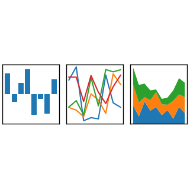
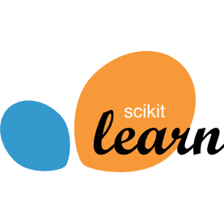

Learn the basic language features (and syntax) of Python: Objects, Looping, Conditionals, List, Dictionaries, Functions
Be able to use:
The Python interpreter,
IPython as a more feature-full interpreter,
Jupyter as the next-generation of IPython,
and stand-alone python scripts.
Be able to write simple Python scripts (e.g. to replace bash scripts or other simple scripts).
The Python Ecosystem for Full-scale Apps
Python
Introduction
keyboard_arrow_down
Discover the broad Python ecosystem which facilitate building full-scale applications in Python, e.g.:
`modules` and `packages`,
virtual environment,
testing frameworks,
application frameworks (for web and otherwise),
packaging systems, and
data science toolkits and the “PyData stack”.
Python Looping Idioms
Python
Intermediate
keyboard_arrow_down
Apply the idiomatic ways to loop in Python: enumerate, zip, sorted, reversed, itertools.
Build their own iterable objects (the `__iter__` and `__next__` methods).
Use and build generators (functions that `yield`).
Construct generator expressions and list comprehensions.
Python Ideologies
Python
Intermediate
keyboard_arrow_down
Implement the most common coding conventions from both PEP8 and Google’s Python Style Guide.
Demonstrate what it means to be “Pythonic”: The Python Manifesto, Coding with Intent, writing “Beautiful” code.
Python Built-in Modules and Data Structures
Python
Intermediate
keyboard_arrow_down
Use and distinguish between the features of the `collections` built-in module: defaultdict, Counter, namedtuple, deque, etc.
Call low-level OS function through the built-in `os` module.
Read/write files with various formats: XML, JSON, CSV, MS Excel, SQLite, pickle.
Manipulate strings and dates in Python.
Python Functions: First-class Objects, Callbacks, Closures, and Decorators
Python
Intermediate
keyboard_arrow_down
Explain the significance of functions being first-class objects in Python.
Pass functions as parameters to other functions (e.g. sort, pd.apply, etc.)
Write function closures:
Return new functions from another function.
Construct and apply function decorators appropriately
Explain the significance of decorators as a design pattern.
Write code using Python’s decorator syntax (“syntactic sugar”).
Python Classes and Inheritance for the Experienced Developer
Python
Advanced
keyboard_arrow_down
Utilize Python’s class syntax and scoping rules (not what you’d expect!)
Explain the difference between statically-typed languages and dynamically-typed languages, and be able to articulate the pros and cons of each.
Use Python’s dynamic typing system to write reusable functions (embrace “duck typing”).
Utilize Python’s magic methods.
Describe when inheritance makes sense in Python.
Python Case Study: Write a DataFrame object using only Python builtins
Python
Advanced
keyboard_arrow_down
Case study requirements:
Use only Python’s builtin modules, data structures and language features.
Build a `DataFrame` class (similar to Pandas, but with your own spin on things).
Use magic methods to create a flexible and readable interface.
Write documentation about what features your DataFrame supports, and what features it does not support.
Packaging in Python for Internal and External Distribution
Python
Advanced
keyboard_arrow_down
Learn the differences between `conda-forge` and `PyPI`.
Learn how to use Conda to package Python for both internal and/or external distribution.
Python C-extensions and the GIL
Python
Advanced
keyboard_arrow_down
Write, compile, and use a C-extension from scratch.
Wrap, compile, and use an existing C-library.
Articulate what the GIL is, why it exists, and how to parallelize code despite the GIL (i.e. how to release the GIL in your C-extension to allow parallelism).
Scientific Computing in Python: Overview
Data Science
Introduction
keyboard_arrow_down
Utilize basic functionality of SciPy, NumPy, and Pandas.
Describe the multitude of uses for SciPy.
Describe NumPy n-dimensional arrays and why NumPy is groundbreaking.
Explain the use and importance of DataFrames in Pandas.
Articulate how StatsModels is used for … you guessed it, statistical models!
Scientific Computing in Python: Fast Numeric Computation
Data Science
Intermediate
keyboard_arrow_down
Write vectorized operations in NumPy,
Avoid and describe inefficient combinations of operations with NumPy,
Explain distributed computation with Dask
Describe in detail GPU computation with Numba.
NumPy Full Tour
Data Science
Intermediate
keyboard_arrow_down
Explore the entire NumPy API (very quickly!) to obtain a solid understanding of its overall capabilities.
Statistics with Python: Hypothesis Testing and Confidence Intervals
Data Science
Introduction
keyboard_arrow_down
Answer precisely the question “What actually is a p-value?”
Apply the tenets of random sampling and hypothesis testing, and understand their strengths and weaknesses.
Compute confidence intervals and understand how they relate to hypothesis testing.
Calculate p-values, confidence intervals, and run hypothesis tests in Python with SciPy.
Statistics with Python: Random Variables and Common Distributions
Data Science
Intermediate
keyboard_arrow_down
Define what a random variable is.
Articulate the difference between continuous random variables and discrete random variables.
Describe the the common probability distributions (normal, uniform, gamma, poison, bernoulli, binomial, etc).
Compute PDFs, PMFs, CDFs, etc using Python with SciPy.
Use statsmodels to do linear regression and regression analysis.
Statistics with Python: Modern Methods
Data Science
Advanced
keyboard_arrow_down
Understand and apply Bootstrap Method
Apply Bayesian statistics to datasets using Python
Articulate “modern” statistical methods in Python

Exploratory Data Analysis with Pandas: Basic Operations
Data Science
Introduction
keyboard_arrow_down
Read data into DataFrames from common formats: CSV, TSV, JSON, XML, HTML, HDF5, SAS, Excel
Convert to the proper datatypes, and view summary statistics of a DataFrame.
Filter data using Series objects, indexing, and boolean masks.
Merge, append, and concatenate DataFrames.
Export data to common formats: CSV, TSV, JSON, XML, HTML, HDF5, SAS, Excel
Construct basic plots through Pandas.
Exploratory Data Analysis with Pandas: Transformation and Aggregation
Data Science
Intermediate
keyboard_arrow_down
Transform data within DataFrames and Series using datetime and string transformations.
Utilize group-by operations and workflow of aggregation, transformation, and filtration.
Exploratory Data Analysis with Pandas: Optimizations, Multi-index, and Time Series
Data Science
Advanced
keyboard_arrow_down
Articulate why vectorized operations are fast and should always be used.
Recognize and avoid n^2 operations which kill performance in Pandas.
Demonstrate the intricacies of the multi-index DataFrames.
Store time-series in Pandas applying date/time manipulation and resampling.
Plotting in Python with Matplotlib and Convenience Layers
Data Science
Introduction
keyboard_arrow_down
Create plots in Matplotlib using two interfaces: global, OOP
Use Seaborn as a convenience layer atop Matplotlib
Construct plots using Pandas as another convenience layer
Plotting in Python with Bokeh
Data Science
Intermediate
keyboard_arrow_down
Explore the capabilities of the Bokeh plotting library.
Use Bokeh to create interactive plots in Jupyter.
Publish interactive plots to the web using Bokeh.
Plotting in Python with Specialized Libraries
Data Science
Advanced
keyboard_arrow_down
Create plots using alternative plotting libraries:
Datashader
GeoViews
Use PyViz as a high-level plotting library.
memory
Machine Learning Concepts: Core Concepts
AI / ML
Introduction
keyboard_arrow_down
Differentiate between the three main subfields of Machine Learning, supervised, unsupervised, and reinforcement, through a hands-on approach
Apply the fundamental methodology of Supervised Machine Learning (function estimation and model validation).
memory
Machine Learning Concepts: Simple Models
AI / ML
Intermediate
keyboard_arrow_down
Work with several simple supervised ML models:
Linear regression
kNN
Decision trees
Random Forests
Explore and run simple unsupervised ML models:
K-means
Hierarchical clustering
memory
Machine Learning Concepts: Complex Models
AI / ML
Advanced
keyboard_arrow_down
Dive into more complex supervised ML models:
Gradient Boosting (trees, specifically)
SVMs
Neural networks

Machine Learning in Python: Intro to Scikit-Learn
AI / ML
Introduction
keyboard_arrow_down
Intro to the capabilities of scikit-learn.
Explore basic functionality of scikit-learn with a hands-on approach.
Machine Learning in Python: Scikit-Learn's Pipelines and Grid Searching
AI / ML
Intermediate
keyboard_arrow_down
Use scikit-learn’s Pipelines and FeatureUnions to ensure proper reproducibility, validation methodology, and code reusability.
Use grid searching with scikit-learn to find optimal models.
Machine Learning in Python: Preprocessing and Meta-models with Scikit-Learn
AI / ML
Advanced
keyboard_arrow_down
Intro to preprocessing data and feature engineering (examples given of images, text, audio, and tabular).
Intro to committees of models, and cascades of models.
Machine Learning in Python: Intro to PyTorch
AI / ML
Introduction
keyboard_arrow_down
Intro to the capabilities of PyTorch.
Explore basic functionality of PyTorch hands-on.
share
Webscraping with Python
Other
Intermediate
keyboard_arrow_down
Learn to parse HTML using BeautifulSoup.
Learn to automate the web browser (for scraping purposes) using Selenium.

 NumPy Full TourData Science Intermediatekeyboard_arrow_down
NumPy Full TourData Science Intermediatekeyboard_arrow_down Plotting in Python with Matplotlib and Convenience LayersData Science Introductionkeyboard_arrow_down
Plotting in Python with Matplotlib and Convenience LayersData Science Introductionkeyboard_arrow_down Plotting in Python with BokehData Science Intermediatekeyboard_arrow_down
Plotting in Python with BokehData Science Intermediatekeyboard_arrow_down Plotting in Python with Specialized LibrariesData Science Advancedkeyboard_arrow_down
Plotting in Python with Specialized LibrariesData Science Advancedkeyboard_arrow_down Machine Learning in Python: Intro to PyTorchAI / ML Introductionkeyboard_arrow_down
Machine Learning in Python: Intro to PyTorchAI / ML Introductionkeyboard_arrow_down